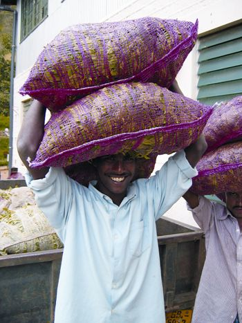

You see it on labels for coffee, chocolate, flowers and more, but what does it really mean? Fair Trade is a designation developed to help consumers support products that come from farms that have been certified to provide fair wages and safe working conditions (forced child labor is prohibited). In addition, producers on certified farms are paid a premium to apply to projects such as healthcare, women’s leadership initiatives and micro-finance programs, as voted on by the farmers and workers themselves.
Fair Trade Certified also ensures that farmers obey internationally monitored environmental standards, while empowering farmers and farm workers with financial incentives and resources for organic conversion, reforestation, water conservation and environmental education.
Goods that bear the Fair Trade Certified label carry an independent, third-party-verified guarantee that the farmer received a fair price for the crop, and is empowered to compete in the global marketplace through direct, long-term contracts with international buyers. This market access lifts farming families from poverty through trade - not aid - which keeps food on the table, children in school and families on their land.
Currently you can only find the Fair Trade Certified label on agricultural products, including coffee, tea and herbs, cocoa and chocolate, fresh fruit, rice, sugar, flowers, honey and vanilla. For products such as jewelry and furniture, consumers can look for and support companies that are committed to fair trade principles and practices by checking to see if the manufacturer is a member of the Fair Trade Federation.
|
 TRANSFAIR USA Look for the Fair Trade Certified label on goods such as tea, cocoa, coffee and more. |
|
|